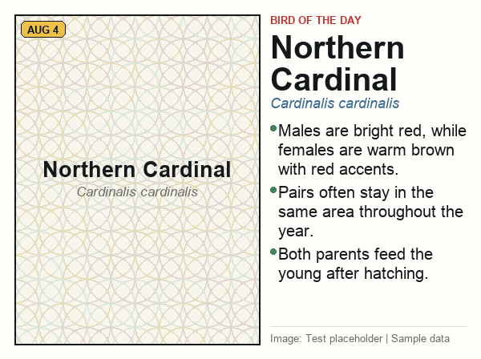

Northern Cardinal
Cardinalis cardinalis
2026-08-04
No overview is available yet.
Fast Facts
- Males are bright red, while females are warm brown with red accents.
- Pairs often stay in the same area throughout the year.
- Both parents feed the young after hatching.
Typically Found
Not available yet.
Habitat
Not available yet.
Conservation
Not available yet.
Sources
Source
Test placeholder | Sample data